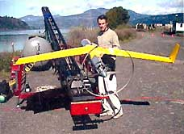

Until recently, researchers in need of oceanic data had to rely on the limited information gathered by satellites and airliners. But that will change this summer when Seascan, a flying robot, makes its debut. Weighing a mere 29 pounds and only ten feet in wingspan, the miniature autonomous aircraft was designed to go places satellites and weather balloons can't.
Seascan is fitted with a digital video camera - visible or infrared for day or night operation - that can spot objects as small as a log from more than five miles away. Launched into the sky by catapult, the plane navigates via GPS and rides the prevailing winds below the level of jet flight, aiding those on the ground with tasks from weather re search to rescue operations.
Since 1997, the Insitu Group and the University of Washington have collaborated to develop data-collecting aircraft that would aid a number of weather- and ocean-related fields and occupations. In 1998, researchers developed Aerosonde Laima, the first robotic craft to cross the Atlantic Ocean. Its success drew attention to the potential of robotic aircraft and led to the development of Seascan. "This time we're saying there's more capability in the aircraft. We're ready to go into routine service - it's a product more than a prototype," says Tad McGeer, Insitu Group president.
-Kirsten Galisson
|
 |
|
|